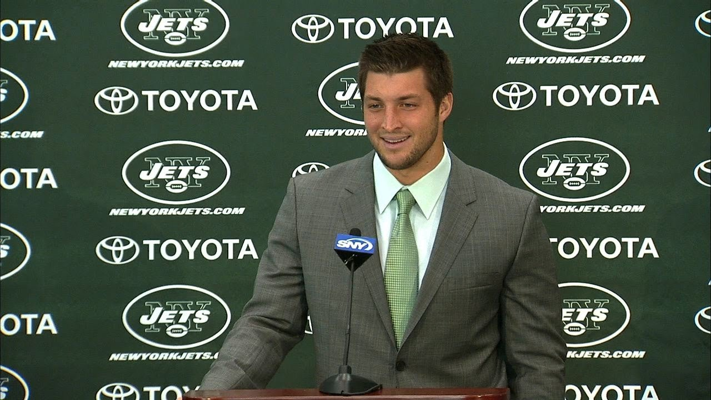

New York Jets
Click The Image To See Tebow's Funny Jets Press Conference
Tebow was traded from the Denver Broncos to the New York Jets on March 21, 2012. Jets special teams coordinator Mike Westhoff stated that Tebow would be used on special teams, while head coach Rex Ryan and offensive coordinator Tony Sparano stated that he would also be used in the wildcat formation on offense. The presence of Tebow throughout the season, in which the Jets struggled, created a controversy as the fans and media called for Ryan to bench the inconsistent Mark Sanchez in favor of Tebow. Tebow suffered two broken ribs during a road game against the Seahawks, but his injury was not confirmed until two days before the Jets' Thanksgiving game against the New England Patriots. He was active despite the injury, which was publicly revealed after the game. Tebow was inactive during the Jets' subsequent game against the Arizona Cardinals in which Sanchez was benched in favor of Greg McElroy. On April 29, 2013, Tebow was released by the Jets. He had thrown only eight passes and rushed 32 times in his one season with the team.